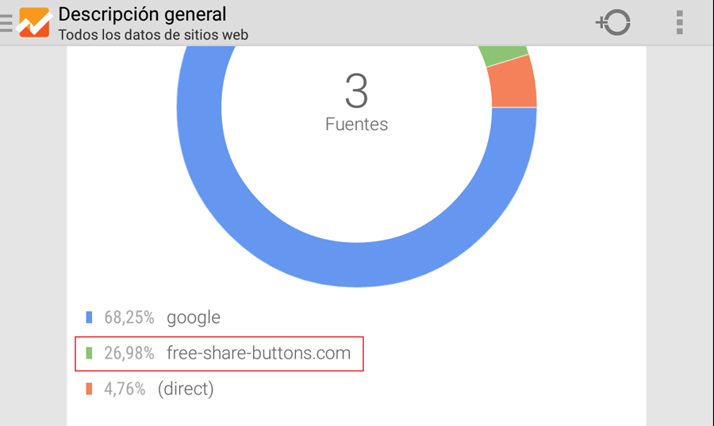
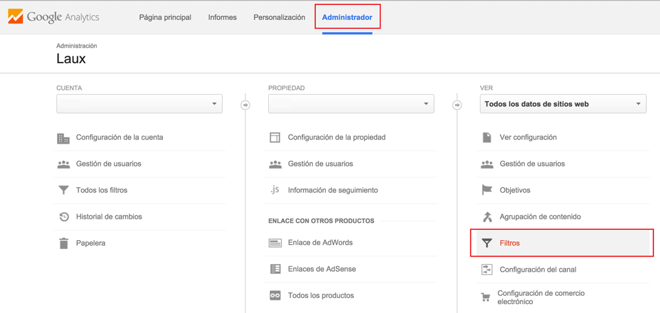
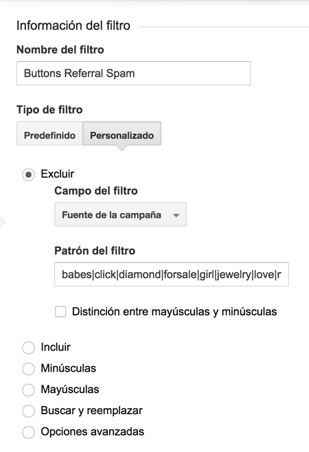
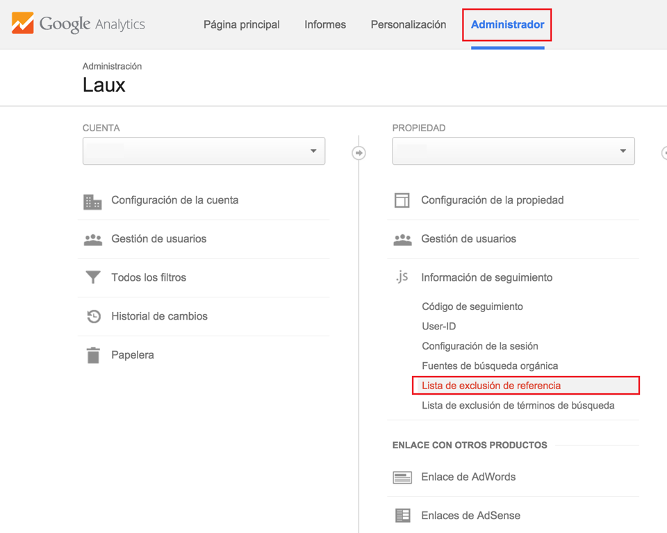
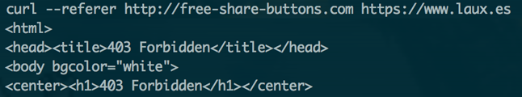

Eliminar Referrer Spam en Nginx y Analytics
Para poneros en situación, el Referrer o Referencia es un campo de cabecera de una petición HTTP. Este campo indica la URL origen desde la cual se ha originado la solicitud. En otras palabras, es la dirección desde la cual la persona que visita tu página ha hecho click en el enlace que le ha llevado a esta. Para más información, podéis pasaros por la Wikipedia.

Referencias sospechosas en Google Analytics
Hoy de paso por Google Analytics me he fijado que algunas referencias de otras webs eran un tanto sospechosas. Es raro que dominios como social-buttons o free-share-buttons se interesen por un blog de UX y desarrollo, así que con una búsqueda encontré de qué se trataba toda esta historia.
Referer Referrer SPAM. ¿Qué ganan con ello?
Muchas webs utilizan herramientas analíticas (como Google Analytics) a diario. Estas nos proporcionan mucha información útil, que nos permite desde saber que artículo es el más visitado en nuestro blog, hasta como enfocar mejor una campaña publicitaria.
De este modo, es especialmente importante que los datos recopilados sean reales, es decir, que el tráfico analizado no provenga de bots o programas automatizados (Al final las personas siempre somos lo más importante :P). En resumen, al recibir ataques de este tipo, nuestras analíticas quedan infectadas ofreciendo información errónea.
Los que utilizan esta práctica consiguen incluir sus links en nuestras herramientas y logs. El Referrer SPAM está bastante penalizado por los buscadores (por ejemplo, la búsqueda de estos dominio en Google no ofrece ningún resultado).
Entonces, ¿por qué este tipo de ataques? La primera es que algo molesto y los que trabajamos con estas herramientas, al final acabamos entrando en dichas webs para comprobar si realmente son "reales" o por curiosidad. Así de simple, consiguen retornar tráfico ahacia su web.
A pararle los pies
Para solucionar este problema tenemos dos frentes con los que lidiar: nuestro servidor y las plataformas analíticas. En este artículo vamos a centrarnos en Nginx y Google Analytics.
Google Analytics
Si ya hemos recibido algún ataque de este tipo, los datos están almacenados en nuestra cuenta. Lo único que nos queda es filtrarlos para evitar que se muestren en la interfaz. Para filtrarlos, primero nos dirigimos a nuestra cuenta y pulsamos en Administrador > Filtros:

Sección de filtros en Google Analytics
Una vez dentro, pulsamos en Filtro Nuevo y rellenamos los campos como se muestra en la siguiente captura. La expersión regular a incluir la podéis encontrar en el siguiente Gist. Si véis que falta algo, no dudéis en comentar y lo agregamos ;).

Filtro de exclusión en Google Analytics
De cara al tráfico futuro, Google Analytics nos permite ignorar dominios de referencia de manera que cuando lleguen nuevos datos con dicha referencia serán ignorados. Aplicar estos filtros es un poco más tedioso, ya que debemos de hacerlo uno a uno. Para ello nos dirigimos a la sección de Lista de exclusión de referencias:

Menú de listas de exclusión de referencias
Una vez dentro de la sección, pulsamos en Agregar lista de exclusión de referencia e incluimos cada dominio con su extensión: .es, .com...
NGINX
También es importante parar estos ataques desde el servidor. Con los cambios anteriores eliminamos los datos erróneos en Google Analytics, pero las peticiones siguen por lo que consumen el ancho de banda de nuestro servidor.
Para bloquear el acceso desde determinadas referencias nos dirigimos a los archivos de configuración de nuestros hosts virtuales. Estos se encuentran en nginx/sites-availables/ o nginx/sites-enabled (personalmente los archivos de configuración los tengo en sites-available y para activarlos creo un symlink en sites-enabled).
En cada archivo de configuración, dentro de location introducimos el siguiente condicional:
# Stop SPAM Referrers
if ($http_referer ~* (Free-Traffic|babes|click|diamond|forsale|girl|jewelry|love|nudit|poker|porn|poweroversoftware|sex|teen|video|webcam|zippo|social-buttons|simple-share-buttons|free-share-buttons)){
return 403;
}
En el Gist que comenté anteriormente tenéis un ejemplo. Antes de reiniciar Nginx, comprobamos que no nos hemos equivocado mediante el comando nginx -t. Si todo está ok reiniciamos nginx: service nginx restart.
Ahora solo nos queda probar que todo ha ido bien, para ello realizamos una petición a nuestro servidor e introducimos como referencia alguna web que debería bloquear. En mi caso he utilizado CURL, y como era de esperar, con una referencia de free-share-buttons obtenemos un error 403.

Al realizar una petición con una referencia Spam, obtenemos un error 403
Más soluciones
Os dejo otros artículos con más información y soluciones a estos ataques :)